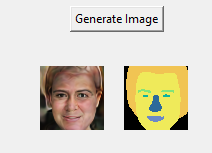

Ability to selectively edit certain semantic sections of the image is called semantic manipulation. Most of the current 3D aware GAN methods using neural fields model the whole image as an overall neural radiance field which limits the partial semantic editability of the generated results. There are many 3D - aware GANs, which use only single view image as input, like Pi-GAN (Chan et al. 2021), GIRAFFE (Niemeyer and Geiger 2021), EG3D (Chan et al, 2022), StyleSDF, Style NeRF etc. But they don’t have control over semantic manipulation. Recently a 3D GAN from Sun et al. 2022, introduced semantic segmentation into the generative network, but they render images and segmentation masks in single network with insufficient semantic part decoupling, which cannot directly edit the semantic regions. For this project, I explored the work [1], known as compositional neural radiance fields (CNeRF). CNeRF, allows us to manipulate independent semantic regions in the synthetic image.
Below picture summarizes the entire proposed method in [1]. Given the complexity of the entire method, I limited the scope of the project to stage 1, which is Low-Resolution CNeRF. Note: The complexity is not just in terms of implementing the big framework, but also in terms of not having the GPU compute power that can train this big network quick.
To go into brief details of Low-Resolution CNeRF (for simplicity, from here we refer to Low-Resolution CNeRF as just CNeRF), this framework differentiates itself from previous work by stacking multiple NeRF generators (we call them local generators), each responsible for handling a semantic element (nose, ear, mouth etc.), and fusing results from all them through semantic fusion and volume aggreration (involving classic volume rendering) to generate low - res color image along with it's semantic mask. Below pictures give the architecture of the semantic local generator and a zoom in view to the volume aggregation.
First and foremost, this project turned out to be much harder than I estimated. One of the biggest thing with this project is (even after limiting the scope to only Low Res CNeRF), the framework proposed itself is very big. Second, important thing is, there is no reference github for this project till second week of April (original repo of this paper got after I was halfway through coding the project). Datasets used for this project is FFHQ [3]
So following the Methodology laid out in [1], I implemented the entire code base with 12 local generators, for the semantic classes background, face/skin, nose, eyes, eye brows, mouth, earrings, glasses, neck, ears, hair, hat, and 2 discriminators (one for global level discrimination and the other for semantic discrimination). The style of the code I used is very similar to [2]. The total training parameters of the network are somewhere aroun d 90 million, out of which majority (like 85%) are for the discriminators.
Training the model I built proved to be very difficult, although I followed the network architecture as per the paper, the model didn't seem to converge with the parameters recommended by the model. Infact, I ran into one of the classic GAN traning problems called non-convergence or convergence failure. In my case, my discriminator loss came down 0 very quickly and the gan loss increased to a certain point and hovered around. I outputted the intermediate results at multiple checkpoints, but the all of the tunred out to be noise, which are clear signs of GAN non-convergence. Below are some plots of the losses while training for 4500 iterations on 100 diverse samples from FFHQ dataset.

Below are the some results from different model checkpoints while training
FID score I got here was 467.56
From the above internmediate results, we can see that the model spit noise even after 4000 iterations and also it started generating discontinuous noise , meaning random white spots. We can see this in the image corresponding 4500, there are white spots dispersed over the output. This is not a good sign and often an indication of non-convergence. Also the segmap have lost any variance at all as the training iteration gone up, meaning the model , more specifically the generator, is not learning. Looking the gan loss for discriminator (quickly dropped to zero and stuck there), my training got dominated by discriminator. It is already established in literature corresponding to GAN that for effective training of GANs, discriminator and generators should be in balance else the GAN will suffer with mode collapse or non-corvergence (latter in my case).
Meanwhile I reached out to the original paper authors for some questions, and they shared the link of their original repo they published 2 weeks recently. I tried to point out the differences from my implementation against theirs. Except for the activation functions and some gma smoothing differences I didn't seem to find any difference from theirs and my implementation.
I tried running some experimental training scenarios with changing loss weights, especially the gan's R1 saturation loss weights, but the mo del seem to stuck at non-convergence only. After connecting with professor, discussing my project and trying to debug my model he suggested that I try using the author's original implementation and get it up running first. So I took the original authors repo [4] and modified it a bit (to account for 12 semantic class training), connected it my training dataset processing pipeline and ran training scenarios. Note: the original repo implements stage 2 too, since I limited my scope to stage 1, I decouple the super resolution stage and only modified to have the low res CNeRF stage. Now the model started training and the losses seems to stable. By stable the generator losses didn't drop to 0 and the gan loss didn't blow up or increased. Also the the intermediate results I got from the model showed activity of synthetic faces, which indicated that the generator started learning. Once I found out the model is learning, I trained the model on full blown scernio, which is 40000 image samples and the training iterations are 100K. Below are some intermediate results of the model at various checkpoints during the training.
At iteration 0
At iteration 10000
At iteration 30000
At iteration 60000
At iteration 90000

As we can clearly see, the model is improving as the number of training iterations go up. But we have to note that, although the model is improving and it is generating human like faces, the quality of it (in terms of the various blend artifacts) is not realistic enough. As per the paper, and similar other papers on 3D- Aware GANs, the recommended number of iterations are 300K when the batch size is 24 samples. Since I am using a batch size of 4 (due to limited GPU resource. Currently I am using a single A100, which is of 40GB GPU RAM, is not enough for this model to run 24 batch size), I may have to train it much higher than 300K to reach high quality synthesis checkpoint. Keeping in mind the time (it took nearly 56 hours to train for 100K iterations), computational resource (spent like 150$ on this already) in mind, I may have to stop the training at 100K. Probably by the time I submit this repost I will be able to get to 120K iterations of training. So the results I am going to discuss/show in the next section are for the model at 100K iteration checkpoint. Since we only reached 33% of the training ietrations recommended it is expected that the results will have many artifacts and incomplete semantic decoupling.
I am presenting the results from the experiment 2 model , after 100K training iterations. Like mentioned at earlier of the project, we are only exploring the stage 1 of the framework. Low Resolution CNeRF. The output from Low Res CNeRF is a 64 x 64 size image and segmentation maps. So all out results will be of resolution 64 x 64. I use the help of the interactive UI I built to showcase various results.
First, let's see if we are getting diversified results. Below are some generated face from frontal view. We can see that the synthesized images have clear artifacts, but we already expected that given we only achieved 33% original training recommended. Also, the generated faces seems to be a bit similar. Could be a mode collapse, but then again we have to give it more time and a bit more of data. (Note: Original FFHQ have 70000, but we only used 40000 of them, due to computational constraints).
Second, we now generate 3D consistent view consistent image set. Meaning same face synthesized in different views. 10 View directions are sampled in the range of (-1.5, 1.5) along the azimuth angle. From the below pictures we can clearly see that the 3d view consistent images are getting generated very well.

Third, I tried to visualize the color maps from each individual generator. The hypothesis is that each individual generator focuses on a particular semantic element and so when we render the output from a particular generator, it should have lot more activity in that semantic region. Below are the corresponding images.
we can see from above semantic maps, for nose, eyes, brows the acitivity is highlighted in those corresponding semantic regions, but for other there is significant activity in other semantic regions too, which indicate that the model's generators haven't decoupled completely yet. This Could be again because we only reached to 33% of recommended training iterations.
Fourth, I tried to see if I can directly manipulate the latent codes corresponding to a particular semantic region and see only that region's change be reflected. By other words, testing the semantic manipulation ability. Note that the paper didn't mention any details on whether they used any other models to determine the latent code directions to make semantic regions change in a particular intended way. So I used a simplle heuristic to determine the latent direction that can be explored. That is simply the latent code divided by it's norm. It is a naive approach, but building a seperate model to determine the latent code might not be feasible in 4 weeks of project time. Below I shows the results when I tried to manipulate nose, mouth, hair and eyes. Top image is the original synthesized image, which we tried to manipulate by tweaking the latent codes to different semantic regions.
From the image, we can see that the intended change to the intended semantic region is subtle and is overshadowed by the more than subtle change to other un-intended semantic regions. There could be 2 reasons for this. It might be that the training done is not enough for the local generators to completely de-couple or the latent direction I took using my naive approach maybe off by quite a big margin or it could be a combination of two. I personally think that it is the combination of both.
Finally to conclude, I worked on implementing Low Res CNeRF from [1]. I implemented my own version and found that my version stuck at GAN non-convergence. After some failed experimentation, I took the official repository and bent it a bit to train my own model on 12 semantic regions. Although, using the official repo made the model to learn synthesizing images, due to less training iterations (did only 100K while recommended was > 300K), the quality of the images generated is that great. And hence the images have heavy artifacts. Also dude to not adequate training, I believe that the local generatos haven't decoupled completely. I probably would have liked to train the model to 300K, maybe even explore methods to extract latent directions in which I can edit. This is something I will explore in the coming days for my own interest. So to conclude, Although I haven't achieved the initial proposed objective completely, I think I came close to completing it. It is a matter of computational resources and time. That being said, I learned a lot doing this project.